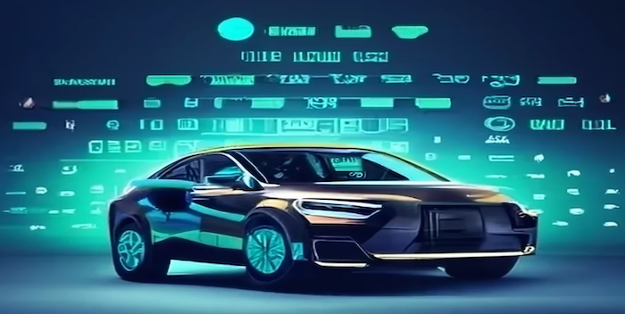

Analysis of EV Car Prices through Web Scraping

In my exploration of electric vehicles (EVs), I turned to web scraping as a means to extract data from the EV database org. This effort yielded a wealth of insights into the ever-evolving world of EVs. During this fascinating journey, I uncovered noteworthy trends within the dynamic electric vehicle market.